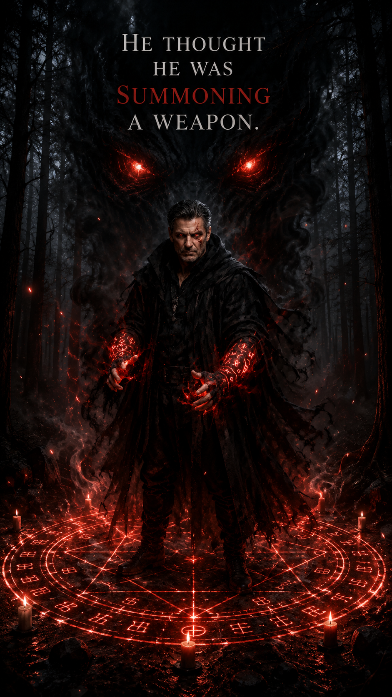
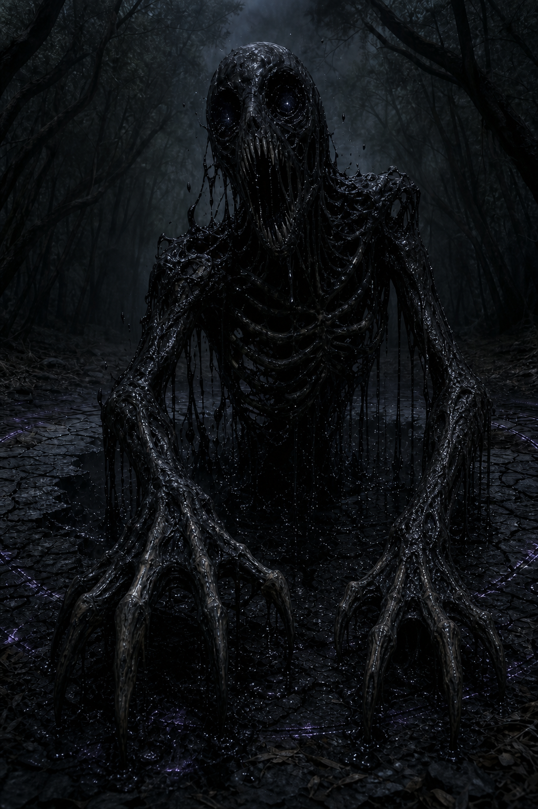

Ravenloft Manor
An old family estate filled with memory, mystery, and a presence that seems to notice everyone who crosses its threshold.
Book One: The Calling
An old manor. A family inheritance. Secrets that refuse to remain buried.
This spoiler-light introduction reveals only what belongs to Ravenloft: The Calling. Step inside, meet the people drawn together by Ravenloft, and discover the mystery without opening doors meant for later books.
An old family estate filled with memory, mystery, and a presence that seems to notice everyone who crosses its threshold.
Some places are inherited. Others seem to reach for the people meant to find them. Ravenloft has been waiting.
Old rooms, forgotten memories, and unanswered questions begin to reveal a history the family never knew belonged to them.
At the heart of the story are the bonds people protect, the losses they carry, and the choices they make for one another.
Ravenloft does not simply reveal secrets within its walls. It awakens truths hidden within the people it calls home.
Something lies beneath the ordinary surface of Ravenloft, waiting to be understood one discovery at a time.
The house remembers. Even if they don't.
Meet the people of Book One
Ezra, Astrid, and Symphony Hawthorne return to Ravenloft carrying memories, grief, and questions the manor may finally be ready to answer.
Rain brings her own strength, perspective, and place within the lives unfolding around Ravenloft.
Dale's loyalty and courage become part of a journey larger than any one person expects.
Orion enters Ravenloft's story carrying a name, a history, and truths that unfold in their own time.
Corvin Ashford is connected to Ravenloft's widening mystery, though not every answer should be revealed before the story begins.
Their histories, relationships, and choices are best discovered in the pages of Ravenloft: The Calling.
Those Who Move in Darkness
Ravenloft's legacy is shaped not only by those who defend it, but by the shadows determined to claim its power.

A name tied to the darkness gathering beyond Ravenloft's doors. His motives and connection to the manor are best uncovered within the story.
Appears in Book One
Partially formed and dripping void, the Devourer is an ancient hunger forcing itself through a wound in the veil.
Appears in Book OneMore shadows will emerge as the Ravenloft series continues.
The beginning of the journey
A death brings the family back to Ravenloft Manor and into a past they do not fully understand.
Memories, hidden spaces, and strange moments suggest Ravenloft is more than an ordinary inheritance.
Each discovery raises new questions about the family, the manor, and what has been waiting within both.
The journey into Ravenloft starts with one door, but not every hidden door belongs to the house.
Begin with Book One